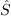

|
Langley Research CenterTurbulence Modeling Resource |
Return to: 2D NACA 0012 Airfoil Validation for Numerical Analysis Intro Page Return to: Turbulence Modeling Resource Home Page TURBULENCE MODEL NUMERICAL ANALYSIS
2D NACA 0012 Airfoil Validation for Turbulence Model Numerical
Analysis
SA Model Results
for M = 0.15, Rec = 6 million, alpha = 10 deg, Tref = 540 R
Link to SA equations
Please refer to AIAA Journal, Vol. 54, No. 9, 2016, pp. 2563-2588,
https://doi.org/10.2514/1.J054555 and AIAA Paper 2015-1746,
https://doi.org/10.2514/6.2015-1746.
Results are shown for the NACA 0012 at M=0.15, Re=6 million based on chord, and alpha=10 deg.
Two different CFD codes (FUN3D and CFL3D) and 3 different grid families have been employed
in an effort to try to discern the grid-converged result for this case.
(For the case without farfield point vortex correction BC,
TAU results are also included.)
Results here
are for the "standard" SA model. However, note that FUN3D and TAU make use of
the SA-neg variant, which was designed for improved numerical
behavior. SA-neg is passive to the
original (SA) model in well-resolved flowfields, and hence is expected to yield essentially identical
results for the cases here.
Furthermore, FUN3D and TAU both used clipping method "c" for ,
while CFL3D used clipping method "a" (see Note 1 on
the Spalart-Allmaras equation page).
For both codes, the farfield value of the Spalart turbulence variable is
where
where
The difference between
the three grid families is in their trailing edge streamwise (TES) spacing: the grid family I has the
coarsest TES spacing (similar to the spacing used for the
2D NACA 0012 Airfoil Validation Case),
the grid family II has the finest TES spacing, and the grid family III has an intermediate TES
spacing. All grids have a farfield extent of about 500c.
Results are given both without and with a farfield Point Vortex correction BC:
Return to: 2D NACA 0012 Airfoil Validation for Numerical Analysis Intro Page Return to: Turbulence Modeling Resource Home Page
Recent significant updates: Responsible NASA Official:
Ethan Vogel
 .
In both codes the Prandtl number Pr is taken to be constant at 0.72, and turbulent Prandtl
number Prt is taken to be constant at 0.9.
The dynamic viscosity is computed using
Sutherland's Law (See White, F. M., "Viscous Fluid Flow," McGraw Hill, New York, 1974, p. 28).
In Sutherland's Law, the local value of dynamic viscosity is determined by plugging the local value of temperature
(T) into the following formula:
.
In both codes the Prandtl number Pr is taken to be constant at 0.72, and turbulent Prandtl
number Prt is taken to be constant at 0.9.
The dynamic viscosity is computed using
Sutherland's Law (See White, F. M., "Viscous Fluid Flow," McGraw Hill, New York, 1974, p. 28).
In Sutherland's Law, the local value of dynamic viscosity is determined by plugging the local value of temperature
(T) into the following formula:

 ,
,
 , and
, and
 .
The same formula can be found online
(with temperature constants given in degrees K and some small conversion differences).
Note that in terms of the reference quantities for this particular case, Sutherland's Law can equivalently be written:
.
The same formula can be found online
(with temperature constants given in degrees K and some small conversion differences).
Note that in terms of the reference quantities for this particular case, Sutherland's Law can equivalently be written:

 is the reference dynamic viscosity that corresponds to the freestream in this case, and
freestream
is the reference dynamic viscosity that corresponds to the freestream in this case, and
freestream  (as defined on the
previous
page) is 540R. This latter form may be more convenient for nondimensional codes.
(Specific details regarding an implementation of Sutherland's Law in nondimensional codes can be found in
handwritten notes describing Sutherland's Law in CFL3D and FUN3D.)
(as defined on the
previous
page) is 540R. This latter form may be more convenient for nondimensional codes.
(Specific details regarding an implementation of Sutherland's Law in nondimensional codes can be found in
handwritten notes describing Sutherland's Law in CFL3D and FUN3D.)
03/10/2015 - added description of clipping method for used
Page Curator:
Clark Pederson
Last Updated: 11/10/2021